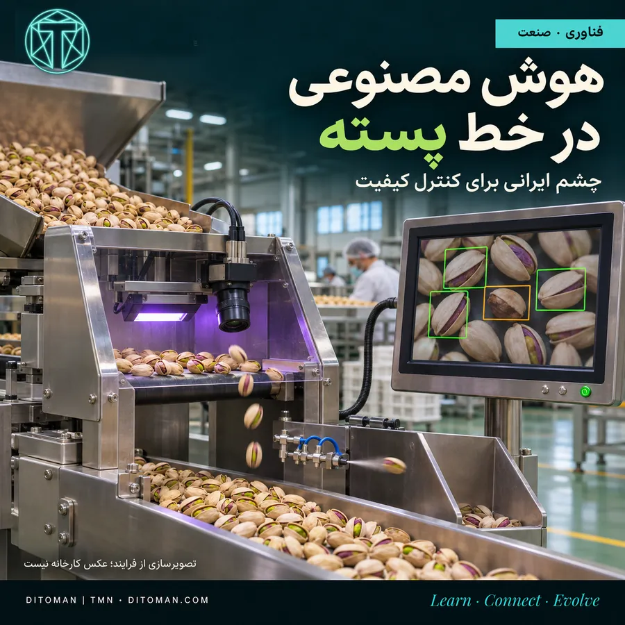
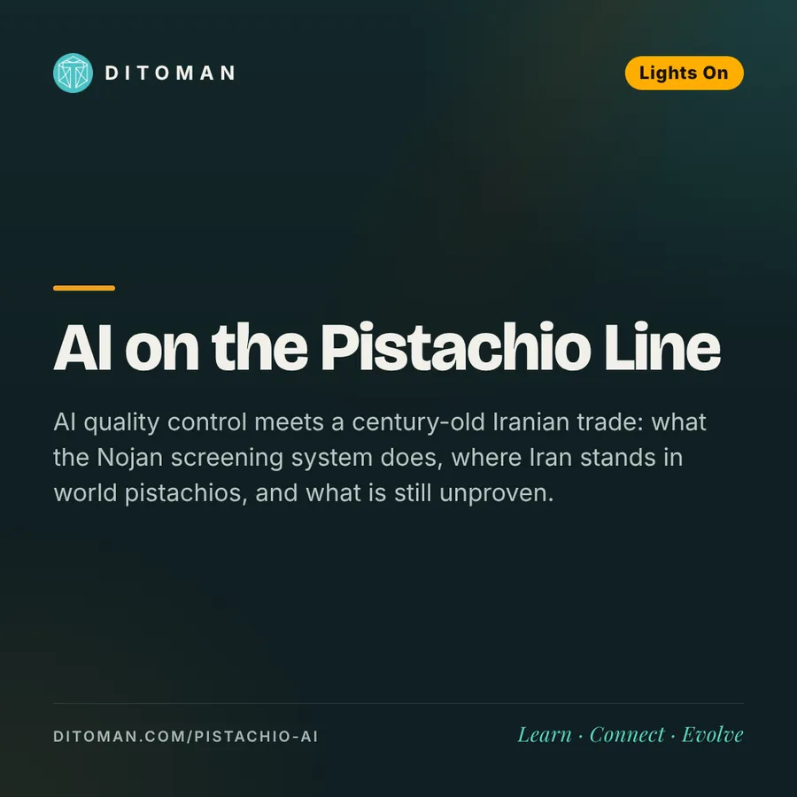

چشم ایرانی در خط پسته؛ از باغهای کرمان تا بازار جهانی
An Iranian Eye on the Pistachio Line: From Kerman's Orchards to the World Market
AI quality control meets a century-old Iranian trade: what the Nojan screening system does, where Iran stands in world pistachios, and what is still unproven.
کنترل کیفیت با هوش مصنوعی به یک تجارت صدسالهی ایرانی رسیده است: سامانهی بازرسی نوژن چه میکند، ایران در بازار جهانی پسته کجا ایستاده، و چه چیزهایی هنوز ثابت نشده است.
پشت یک مشت پسته، فقط باغداری نیست؛ مدیریت آب و خاک، فرآوری، آزمایشگاه، ماشینسازی و تجارت هم قرار دارد. حالا مهندسی هوش مصنوعی هم وارد این زنجیره شده است.
۰۱. چه اتفاقی افتاد؟
شرکت دانشبنیان نوژان، مستقر در پارک علم و فناوری دانشگاه تهران، سامانهای برای غربالگری پستههای مشکوک به آلودگی آفلاتوکسین معرفی کرده است. طبق گزارش ۴ شهریور ۱۴۰۵، این سامانه تصویربرداری مرئی و فرابنفش را با یادگیری عمیق ترکیب میکند؛ نرخ تصویربرداری اعلامشدهی سازنده ۱۰۰ فریم در ثانیه است.
پستهها وارد دستگاه میشوند، از مقابل دوربین و حسگر میگذرند و پس از بررسی، دانههای انتخابشده با هوای فشرده از مسیر اصلی خارج میشوند. همین فرایند به تخصصهایی مانند بینایی ماشین، طراحی برد الکترونیکی، مکانیک و نگهداری تجهیزات نیاز دارد.
۰۲. این دستگاه چه چیزی را تشخیص میدهد؟
نشانههای مشکوک را غربال میکند. پژوهش دانشگاه میلان تأکید میکند فلورسانس اثبات قطعی آلودگی نیست و آزمون شیمیایی همچنان ضروری است. آن پژوهش ارزیابی محصول نوژان نیست؛ برای عملکرد این محصول، آزمون مستقل عمومی پیدا نکردیم.
۰۳. پستهی ایران امروز چه جایگاهی دارد؟
در تازهترین گزارش بررسیشدهی USDA (اکتبر ۲۰۲۶)، ایران در فصل ۲۰۲۵/۲۶ دومین تولیدکننده و دومین صادرکنندهی حجمی پسته است:
| کشور | تولید، تن | صادرات، تن |
|---|---|---|
| آمریکا | ۷۱۶٬۶۷۶ | ۳۷۰٬۱۱۹ |
| ایران | ۲۲۵٬۰۰۰ | ۱۴۵٬۰۰۰ |
| ترکیه | ۱۲۰٬۰۰۰ | ۴۷٬۶۰۰ |
| مجموع جهان | ۱٬۱۳۱٬۶۷۶ | ۵۷۲٬۳۱۹ |
همهی اعداد بر مبنای «معادل پسته با پوست» هستند. سهم محاسبهشدهی ایران حدود ۲۰٪ از تولید و ۲۵٪ از صادرات جهانی این گزارش است. این رتبه به فصل مشخص مربوط است؛ ترتیب تولیدکنندگان در سالهای مختلف تغییر میکند.
۰۴. صادرات ایران به کجا میرود؟
گزارش انجمن پستهی ایران برای فصل فروش محصول ۲۰۲۵، از مهر ۱۴۰۴ تا پایان شهریور ۱۴۰۵:
| مقصد | صادرات، تن معادل خشک در پوست |
|---|---|
| هند | ۲۶٬۷۲۲ |
| ترکیه | ۲۲٬۴۰۸ |
| امارات | ۱۴٬۹۹۲ |
| عراق | ۱۲٬۴۹۵ |
| روسیه | ۹٬۱۲۸ |
| چین | ۶٬۴۲۷ |
| اتحادیهی اروپا (مجموع ۲۷ کشور) | ۶٬۵۳۶ |
قرقیزستان، قزاقستان، پاکستان و ازبکستان هم بازارهای قابلتوجهی هستند. ترکیه و امارات در گزارش انجمن جزو بازارهای صادرات مجدد قرار دارند؛ بنابراین مقصد گمرکی الزاماً محل مصرف نهایی نیست. این آمار دربارهی خود پسته است؛ صادرات قطعی مدل تازهی دستگاه نوژان به کشور مشخصی تأیید نشد.
۰۵. در این صد سال از کجا به کجا رسیدهایم؟
- ۱۹۲۴ تا ۱۹۲۷: گزارش تجاری کرمان، صادرات پسته به آمریکا را ثبت کرده است. همان سند از آسیب سرما به محصول هم میگوید؛ دغدغهی کیفیت و اقلیم سابقهای طولانی دارد.
- دههی ۱۹۳۰: انجمن پستهی ایران تولید سالانهی کشور را حدود ۲ هزار تن پستهی خشک در پوست برآورد میکند. مقایسه با تولید ۲۲۵ هزار تنی محصول ۲۰۲۵ رشد در مرتبهی صد برابر را نشان میدهد؛ این مقایسه دربارهی تولید است.
- ۱۹۶۹: سند بانک جهانی صادرات ایران را ۶٬۳۸۸ تن به ارزش ۸ میلیون دلار ثبت کرده است.
- دهههای اخیر: صادرات به مقیاس صدها هزار تن رسیده، اما بسیار نوسانی بوده. صادرات فصل ۲۰۲۴/۲۵ انجمن حدود ۲۰۲ هزار تن بود؛ فصل بعد حدود ۱۴۶ هزار تن، یعنی ۲۷٫۴٪ کاهش. فصل پیش از آن رشد حدود ۵۱٪ ثبت شده بود.
درصد دقیق رشد صادرات صدساله قابل محاسبه نیست؛ سری ملی یکدست و همتعریفی پیدا نشد. آمار منطقهای قدیمی، ارزش به قران و وزنهای متفاوت مغز و پستهی با پوست را نمیشود مستقیم کنار هم گذاشت.
۰۶. بزرگترین مشکلات صنعت چیست؟
- آب و فرونشست: در مناطقی مانند رفسنجان، گسترش باغها با برداشت شدید از آب زیرزمینی همراه شده است. افت سفره، هزینهی پمپاژ، کاهش کیفیت آب و فرونشست به هم پیوند دارند. پژوهشها هشدار میدهند افزایش راندمان آبیاری، اگر به گسترش بیشتر باغ و مصرف کل بیشتر منجر شود، الزاماً آبخوان را حفظ نمیکند.
- شوری آب و خاک: تحمل نسبی پسته به شوری نامحدود نیست. در پژوهشی دهساله در فیضآباد، آبیاری زیرسطحی آب کمتری مصرف کرد، اما تجمع نمک در لایههای خاک هم دیده شد.
- اقلیم و سالآوری: سرمای زمستان، سرمازدگی بهاره، گرمای شدید و چرخهی سال پربار و کمبار تولید را نوسانی میکنند و بر برنامهریزی فروش اثر میگذارند.
- کیفیت از باغ تا انبار: کنترل آفات، برداشت بهموقع، فرآوری سریع، خشککردن مناسب، نگهداری و نمونهبرداری. فائو در گزارش فوریهی ۲۰۲۶ از آموزش بیش از ۷۰۰ نفر از فعالان زنجیرهی پستهی ایران خبر داده است.
- استاندارد و هزینهی تجارت: آلودگی قارچی میتواند محموله را از بازار خارج کند. مقررات داخلی، نوسان ارز، هزینهی حمل و بیمه و اختلالات منطقهای هم فشار میآورند. دستگاه جداسازی فقط بخشی از این زنجیره را بهتر میکند.
۰۷. بخش امیدوارکنندهی خبر کجاست؟
پسته میتواند محل اتصال دانش ایرانی به یک نیاز واقعی بازار باشد. کنار باغدار، فرصت فعالیت برای متخصص آب و خاک، آزمایشگاه، برنامهنویس، مهندس برق و ماشینساز وجود دارد. این فناوری نمونهای از همین پیوند است؛ میزان کاهش ضایعات، سود اقتصادی و اشتغال تازهی آن هنوز به شواهد مستقل نیاز دارد.
منابع
- گزارش ۴ شهریور ۱۴۰۵ دربارهی سامانهی غربالگری نوژان (شرکت دانشبنیان، پارک علم و فناوری دانشگاه تهران)
- USDA Foreign Agricultural Service، گزارش پسته، اکتبر ۲۰۲۶ (فصل ۲۰۲۵/۲۶)
- انجمن پستهی ایران، گزارش صادرات فصل فروش ۲۰۲۵ (مهر ۱۴۰۴ تا شهریور ۱۴۰۵) و برآورد تولید دههی ۱۹۳۰
- پژوهش دانشگاه میلان دربارهی فلورسانس و آفلاتوکسین
- گزارش تجاری کرمان، ۱۹۲۴ تا ۱۹۲۷
- بانک جهانی، سند آمار صادرات ایران، ۱۹۶۹
- فائو (FAO)، گزارش فوریهی ۲۰۲۶ دربارهی برنامهی بهبود تولید و صادرات پستهی ایران
- پژوهش دهسالهی آبیاری زیرسطحی در فیضآباد و پژوهشهای آب و فرونشست رفسنجان
تصویر کاور تصویرسازی از فرایند است، نه عکس کارخانه. • The cover is an illustration, not a factory photo.